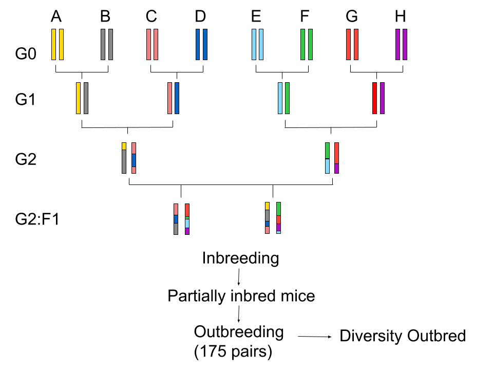
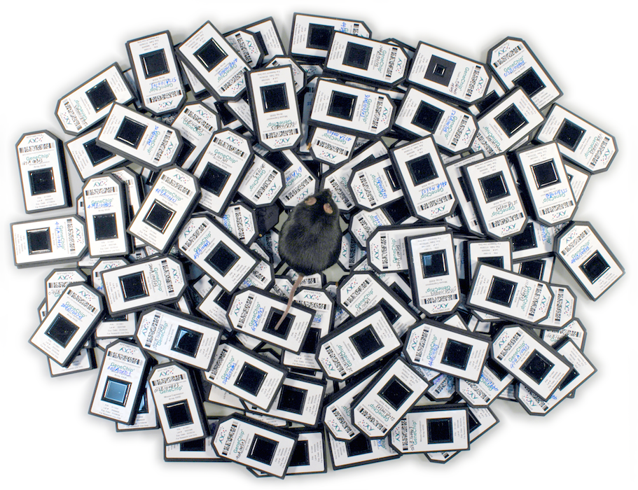
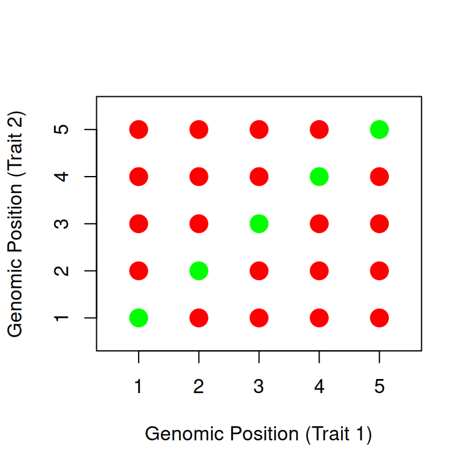
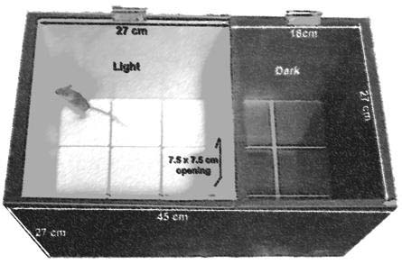
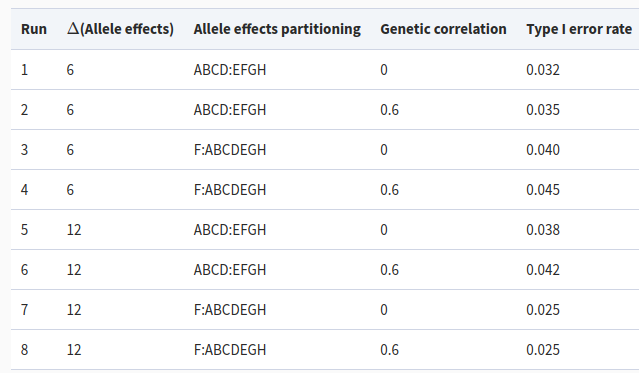
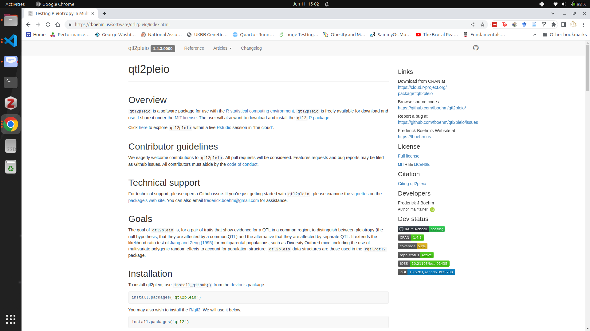

Testing Pleiotropy vs. Separate QTL in Multiparental Populations
Tuesday, June 13, 2023
Quantitative Trait Locus (QTL) Mapping
Motivation
- Variations in quantitative traits are due to genetic and environmental factors
- Quantitative trait loci: number, locations, effects, identities
- Biological insights: new drugs, improve breeding, natural selection
What is QTL mapping?
- A statistical method to identify genetic factors, or loci, that affect a quantitative trait
- Consider each marker, one at a time, and test whether it affects the trait
Why use model organisms?
- We could study hypertension in humans
- But human studies have limitations:
- Cost
- Inability to control subjects’ life histories and environments
- Confounding
- Cost
Why use model organisms?
- Shared biology with humans
- Shorter generation time
- Large numbers of progeny
- Controlled environments
- Control genetic background
- Valid causal inferences
Limitations of Model Organisms
- Relevance to human biology
- QTL identification \(\neq\) Gene identification
QTL mapping in two-parent crosses

QTL Mapping in Multiparental Populations
Multiparental populations
Diversity Outbred Mice

Motivation
10,000+ traits with RNA sequencing and mass spectrometry
Multiparental populations offer high-resolution QTL mapping
New analysis tools, such as a pleiotropy test for multiparental populations, are needed

A New Pleiotropy Test
Benefits of a new pleiotropy test
Insights into genetic architecture
Tool for expression trait hotspot dissection
Complements mediation analysis
Jiang and Zeng (1995) test
Two-parent crosses
Applies to two traits that co-map
\(H_0\): Pleiotropy
\(H_A\): Two separate QTL
Jiang and Zeng (1995) test
Perform a two-dimensional two-QTL scan
\(vec(Y) = Xvec(B) + vec(E)\)

Challenges in multiparental populations
- Complex patterns of relatedness
Multivariate random effects
- Multiple founder lines
Fixed effect for each founder allele
Test procedure
Perform a two-dimensional two-QTL scan
\(vec(Y) = Xvec(B) + vec(G) + vec(E)\)

Test procedure
Test statistic: \[- \log_{10} \frac{\max (\text{likelihood under pleiotropy})}{\max (\text{likelihood for separate QTL})}\]
Parametric bootstrap to get a \(p\)-value
Chesler, et al. Data Analysis
Logan et al. (2013) & Recla et al. (2014)
261 Diversity Outbred mice
Measured about two dozen behavioral traits


Data Structures
\(261\) subjects by \(8\) founder lines matrix per marker
\(261\) subjects by \(261\) subjects (LOCO) kinship matrix (per chromosome)
\(261\) subjects by \(2\) traits matrix
Percent time in light

Hot plate latency

Correlation between traits

LOD definitions
\[LOD(\lambda_1, \lambda_2) = ll_{10}(\lambda_1, \lambda_2) - \max_{\lambda} ll_{10}(\lambda, \lambda)\]
\[\text{profile LOD}_{\text{trait 1}}(\lambda_1) = \max_{\lambda_2}LOD(\lambda_1, \lambda_2)\]
\[LOD_p(\lambda) = ll_{10}(\lambda, \lambda) - \max_{\lambda} ll_{10}(\lambda, \lambda)\]
Profile LOD

Test results
\(\log_{10} \Lambda = 1.2\)
\(p = 0.11\) (1000 bootstrap samples)
Parametric bootstrap test
- Simulate data under the null hypothesis
- Calculate test statistic for each simulated dataset
- Determine proportion of simulated test statistics that exceed observed test statistic
Simulation Studies
Assess Type I Error Rate

Assessing Power

qtl2pleio R package
qtl2pleio R package

qtl2pleio R package
qtl2pleioR package: https://fboehm.us/software/qtl2pleio/

Thank you!
References
Frederick Boehm (frederick.boehm@gmail.com) https://fboehm.us/